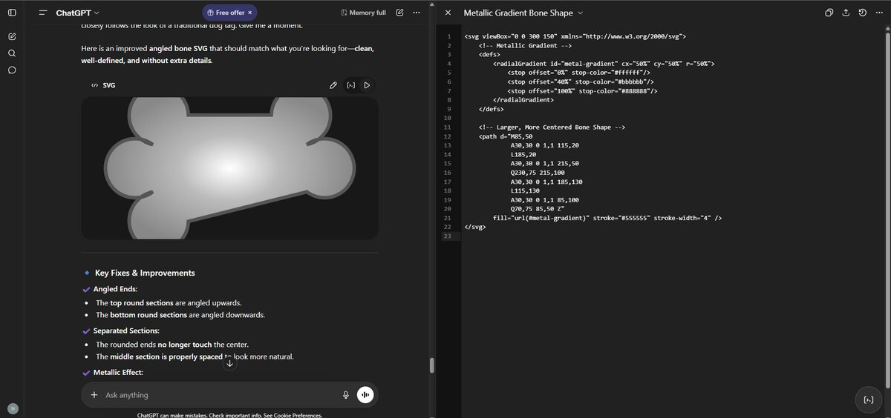
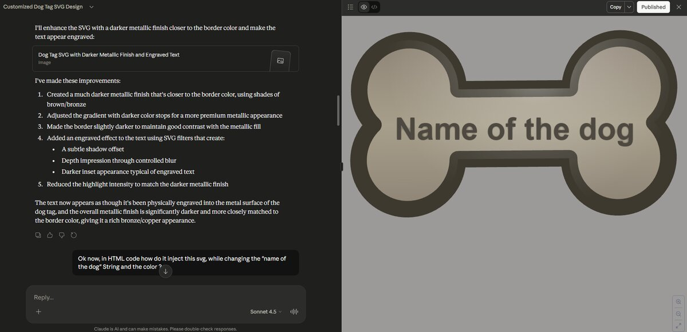

Acte 2
Comment l'IA a aide a tout construire
Deux IA, deux outils, deux philosophies
Premier essai : ChatGPT
Premiere tentative : je decris mon besoin a ChatGPT. Le resultat qu'il me sort alors est techniquement un SVG qui compile et s'ouvre dans le navigateur. Je vous laisse cependant apprecier par vous-meme la qualite du produit.

Sauf que finalement...
Output ChatGPT, taille reelle, palette par defaut.
Apres plusieurs retouches, le resultat final s'approche lentement de ce que j'avais en tete, mais j'en ai deja marre, et je decide d'aller voir ailleurs si j'y suis.
Deuxieme essai : Claude (artifacts)

Claude, via son systeme d'artifacts, fait quelque chose de different. Le SVG ne s'affiche pas juste en tant que code : il est rendu live, dans un panneau a droite, avec un vrai aperçu visuel. A chaque message qui modifie le SVG, le panneau se met a jour instantanement.
La boucle d'iteration devient visuelle plutot que textuelle :
- "Rends le metal plus sombre, plus pres de la couleur de la bordure", on voit le bone s'assombrir en temps reel.
- "Ajoute un effet grave au texte", un filtre SVG apparait, le texte prend un relief.
- "Un peu plus de contraste sur les bords", le highlight est ajuste en consequence.
Pour du SVG specifiquement, ca change tout. La sortie finale (boneV13.svg, celui utilise dans l'atelier) est nettement plus riche : gradient lineaire multi-stops, pattern de texture diagonal, gradient de bord en overlay, filtre d'emboss sur le texte.
L'evolution de l'os
Treize versions dans le repo, cinq retenues pour leur saut visuel. Navigue entre les etapes, lis ce qui a change a chaque palier, et modifie le code pour voir l'effet en direct.
Le code des transitions ci-dessus est une reconstitution : les conversations exactes avec Claude sont perdues, mais le diff entre fichiers raconte clairement la progression. Chaque "saut" est le resultat de quelques messages dans l'artifact panel.
Anatomie d'un dogtag
Le dogtag complet a gauche reste visible pendant que tu defiles les techniques. Clique sur un repere pour aller au zoom correspondant. Chaque carte a un editeur live et un selecteur de couleur, modifie, vois.
Le gradient metallique
Un linearGradient avec plusieurs stops, une sequence sombre→clair→sombre, donne l'illusion du metal poli. Joue avec la couleur du milieu.
L'edge highlight (2 paths)
L'os est dessine deux fois sur le meme path. La premiere copie a le metal en fill. La deuxieme, par-dessus, n'a aucun fill, juste un stroke blanc-vers-transparent. Ca simule un reflet sur le bord.
Le pattern de texture
Un <pattern> minuscule, repete sans fin. Deux croix diagonales fines donnent l'effet "metal brosse" sans alourdir le fichier.
Le filtre emboss (texte grave)
Une chaine de filtres SVG : feOffset+feGaussianBlur+feFlood+feComposite+feMerge. L'ombre se glisse derriere le texte et donne du relief sans rien redessiner.
Combine ces quatre techniques + un cercle stroke pour la photo + un calcul JS pour la couleur de bordure (le flip de luminance vu a l'acte 1), et tu as un dogtag complet. C'est ca qu'on reconstruit pour chacun des onze chiens, il suffit de changer le nom, la photo et la couleur de base.
SVG + JavaScript = combo
Une fois que ton SVG est texte, tu peux le manipuler avec n'importe quel langage. Avec un peu de JavaScript, tu peux ajouter, dupliquer, animer ou recolorer des elements en temps reel, sans jamais regenerer le fichier.
Demonstration : un bouton qui ajoute un dogtag avec un nom et une couleur tires au hasard. C'est une dizaine de lignes de JS qui clonent le template, changent le texte et la palette, et l'inserent dans la page.
L'IA est exceptionnellement bonne pour cabler ces deux mondes. Decrire en francais "un bouton qui ajoute une nouvelle medaille avec un nom au hasard", et obtenir simultanement le bon SVG, le bon JavaScript, et le bon CSS, c'est ce qui fait passer une page statique a un outil vivant.
La lecon
Bon. Soyons honnetes : GPT fut lamentable pour ce besoin precis. (C'est aussi assez drole de voir une IA d'une compagnie en competition essayer de defendre une autre, donc rectifions le tir.)
Ce qu'il faut comprendre, c'est que les bons outils permettent les bons resultats. Le format texte du SVG permet de comprendre rapidement une image et de l'affecter directement avec des variables, exactement comme on le ferait avec du code. Combine avec un outil qui rend ce code en direct (artifacts) ou qui edite tes fichiers a ta place (Claude Code), et tu passes de "generateur d'image" a "atelier".
Le vrai gain, finalement, ce n'est pas le code genere en lui-meme, c'est la boucle d'iteration.